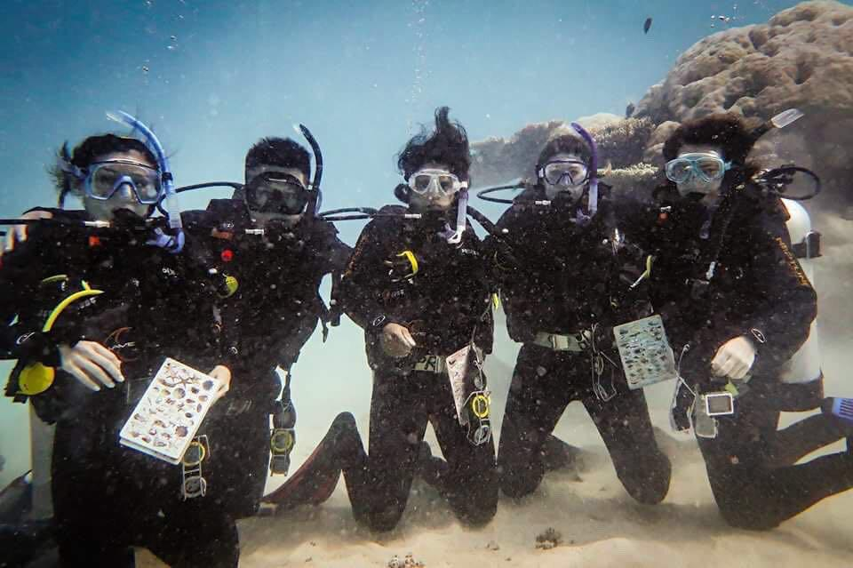

Sabbaticals - Yea or Nay?
YEA!
After 12 years of tech writing in the corporate world, I went on a sabbatical in 2016. I had no plan or alternate source of income. (Must say, a little too adventurous even for me!)
I was driven to do something, anything, radically different from my routine.
In the months that followed, I immersed myself in online courses ranging from UX to entrepreneurship. Whatever caught my fancy, really. Spent my free time volunteering at my favorite animal shelter, traveling, and clicking pics of my muse. I completed my AOW scuba certification too, and seriously contemplated a career change!

(Clicked at 30m/100ft on the Great Barrier Reef seafloor. I'm in the middle, with the funny hair.)In early 2018, I dived into courses again, this time with a purpose. I focused on front-end web development and Docs as Code. Started giving corporate interviews to see where I stood in the tech writing world that I'd left behind.
Interviews can whip you into shape like nothing else! The feedback and advice I received from interviewers helped me dig deep, acknowledge my weaknesses, and flaunt my strengths.
2019 saw me apply to Google's Season of Docs and not make the cut. That was rough, but helped me realize the caliber of writers I was up against. So I improved my skills, participated in Hacktoberfest, and landed a role in a startup. For a geek like me, being immersed in a barrage of new tech, surrounded by brilliant minds, and practically getting paid to learn, is gold.
None of this (okay, maybe some) would've happened without a sabbatical. It made me want to be a technical writer again. That little step away packed a ton of perspective!
(As for scuba diving, well, it's not off the table. :-D )
If a clean break from work isn't your thing, that's fine too. Find other ways to infuse your routine with new energy. Volunteer, plan weekend getaways, learn a new skill at work, participate in hackathons, the list is endless. The keyword here is balance. Don't bite off more than you can chew, and don't compare yourself to others.
P.S. I ended 2020 as a contributor to CERN-DESY in Google's Season of Docs! :) More here.